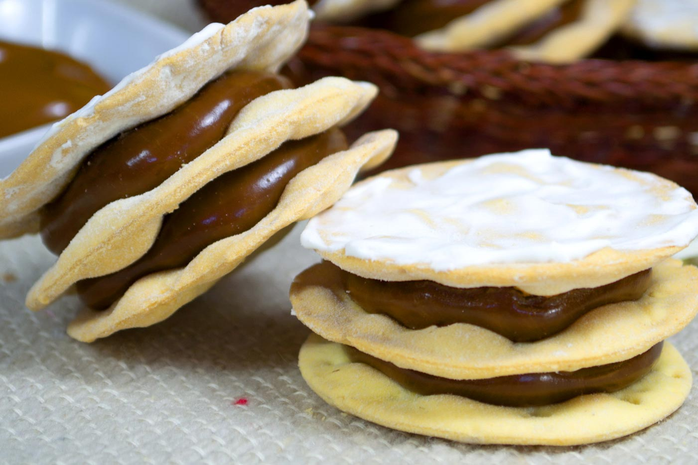

La humita es una comida basada en el maíz, consiste en una pasta o masa de maíz levemente
aliñada, que puede ir envuelta y finalmente cocida o tostada en las chalas del choclo.

Ingredientes:
Azucar (200g)
Agua (150cc)
Unas gotas de jugo de limón
Clara de huevo (1)
Azúcar impalpable (200g)
Dulce de leche repostero
Yemas (5)
Harina 0000 (500g)
Licor de anís (1 cucharada)
Manteca o grasa fina de cerdo (100g)
Sal (1 cucharada)
Preparación:
Tamizamos la harina y formamos una corona. Colocamos en el hueco las yemas, la sal, el licor y
el agua tibia. Integramos todos los ingredientes y agregamos la manteca por trocitos.
Sobamos la masa durante 10 minutos, hasta que quede lisa y elástica. Tapamos con film y dejamos
descansar durante 30 minutos a temperatura ambiente.
Pasado ese tiempo, estiramos hasta lograr un espesor de 3 mm. Cortamos tapas con cortapastas de
8 cm de diámetro (o del tamaño que se desee). Pinchamos con un tenedor y las colocamos en
placas.
Horneamos a 200ºC durante pocos minutos, hasta que empiecen a tomar color.
Dejamos enfriar.
Untamos las tapas con dulce de leche y las unimos de a dos para armar los alfajores.
Para el baño, batimos la clara con el azúcar impalpable y el jugo de limón hasta lograr un glasé
espeso y blanco. Luego, hervimos el agua con el azúcar durante 5 minutos y volcamos sobre
el
glasé mientras se bate con un batidor de mano.
Bañamos los alfajores de inmediato y dejamos orear.